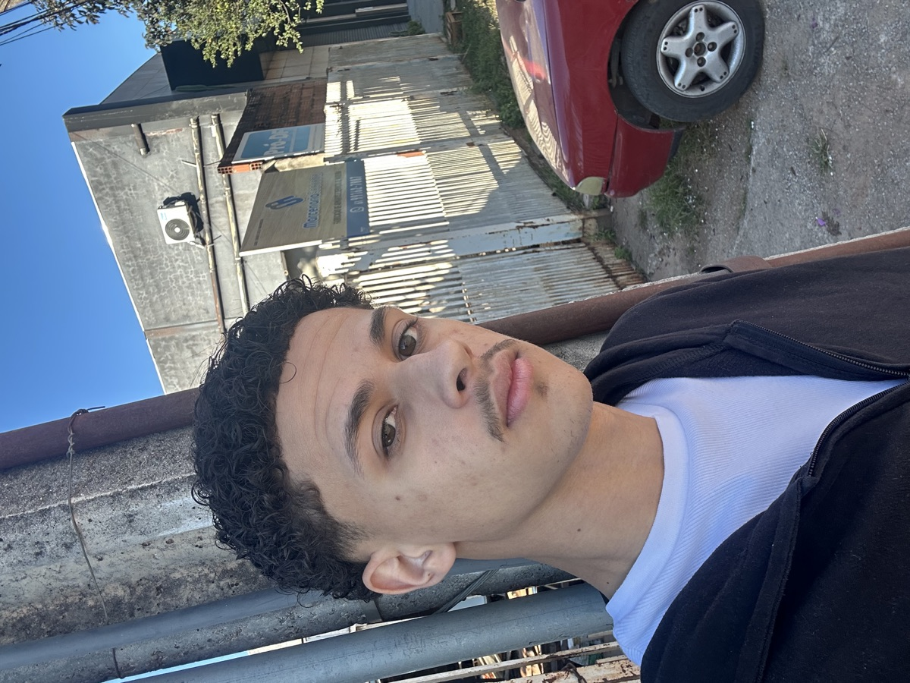

01
Em andamento
Ciência da Computação
Formação que amplia minha visão sobre computação e fortalece minha base para criar soluções digitais.
Ciência da Computação · Brasília, DF
Desenvolvedor web em formação, interessado em criar sites acessíveis.
Tecnologia com propósito. Soluções pensadas para pessoas.

Venho da periferia de São Sebastião, no Distrito Federal. Meu sonho é transformar não só a minha vida por meio da programação, mas também contribuir para a vida de milhares de pessoas.
Gosto da tecnologia porque ela pode simplificar o cotidiano. Tenho um olhar atento para o impacto social e para as soluções que colocam as pessoas no centro.
Minha trajetória combina estudos em tecnologia com experiências profissionais que me aproximaram de pessoas, processos e desafios do dia a dia.
Em andamento
Formação que amplia minha visão sobre computação e fortalece minha base para criar soluções digitais.
Experiência profissional
Experiência em vendas e na área financeira, desenvolvendo comunicação, organização e atenção às necessidades das pessoas.
Como gosto de trabalhar
Socialização, debate construtivo, trabalho em equipe e simplificação de problemas fazem parte do meu jeito de colaborar.
Projetos para aprender fazendo
Exercícios e estudos que fazem parte da minha formação em Computação.
Ver todos no GitHubAprender sobre o mundo e sobre as pessoas também faz parte de como penso tecnologia.
O jogo, a torcida e tudo o que acontece quando um time se une por um objetivo.
Reflexões sobre questões sociais e sobre o nosso mundo interior.
Estou aberto a trocar ideias, aprender e conhecer novas oportunidades.